Sellers spend significant time hopping between 30+ tools to find customer and solution information. Starting from a fairly ambiguous goal — unify those scattered tools through a conversational AI to save users' time — I moved through rapid usability testing and prompt-guided chat design toward a mid/long-term proposal for a fully customized, dashboard-style AI experience.
mov_0 — hero demo
Framing the Problem
Cisco sellers spend nearly 20% of their working time looking for customer and solution information across 30+ internal tools. The initial engineering POC aimed for an AI chat interface spanning 30+ tools inside Webex, with agentic orchestration across user, customer, solution, and enablement agents.
Design question (HMW): How might we unify fragmented customer data to enable sellers to communicate with customers more efficiently?
My role: Collaborated with fellow designers to uncover use cases, helped facilitate workshops, and built interactive prototypes with future scalability in mind to share with the team.
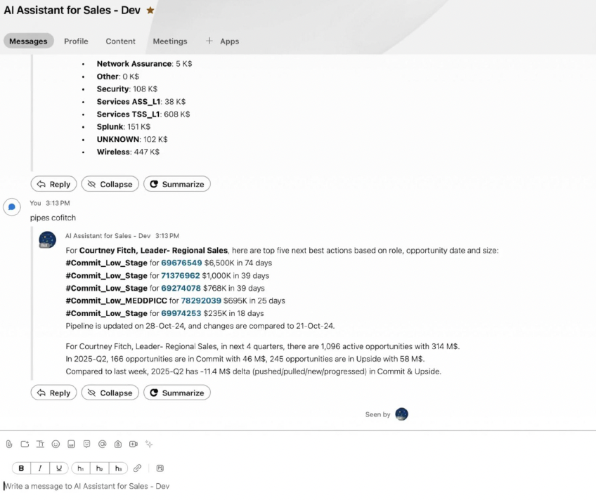
POC built by Sales Engineering in Webex
Discovery & Research
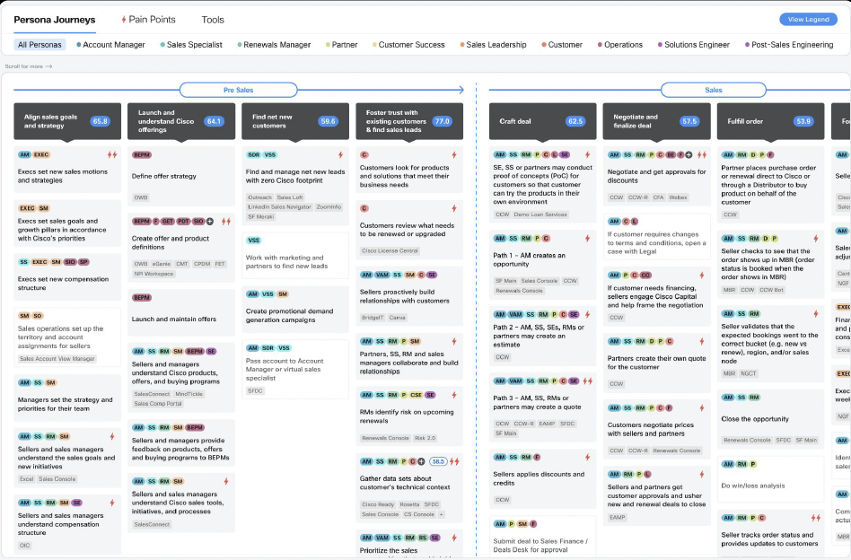
Persona journeys across the selling motion
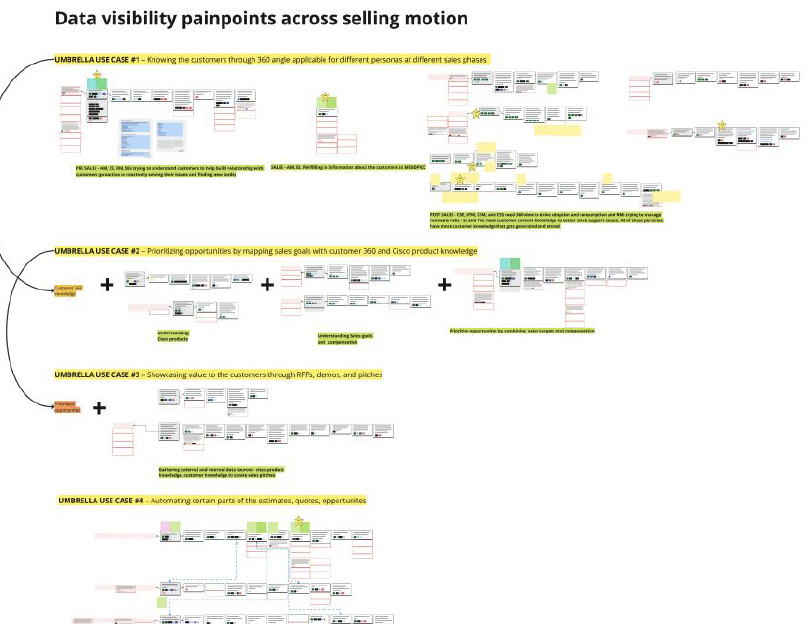
Data visibility pain points across the selling motion
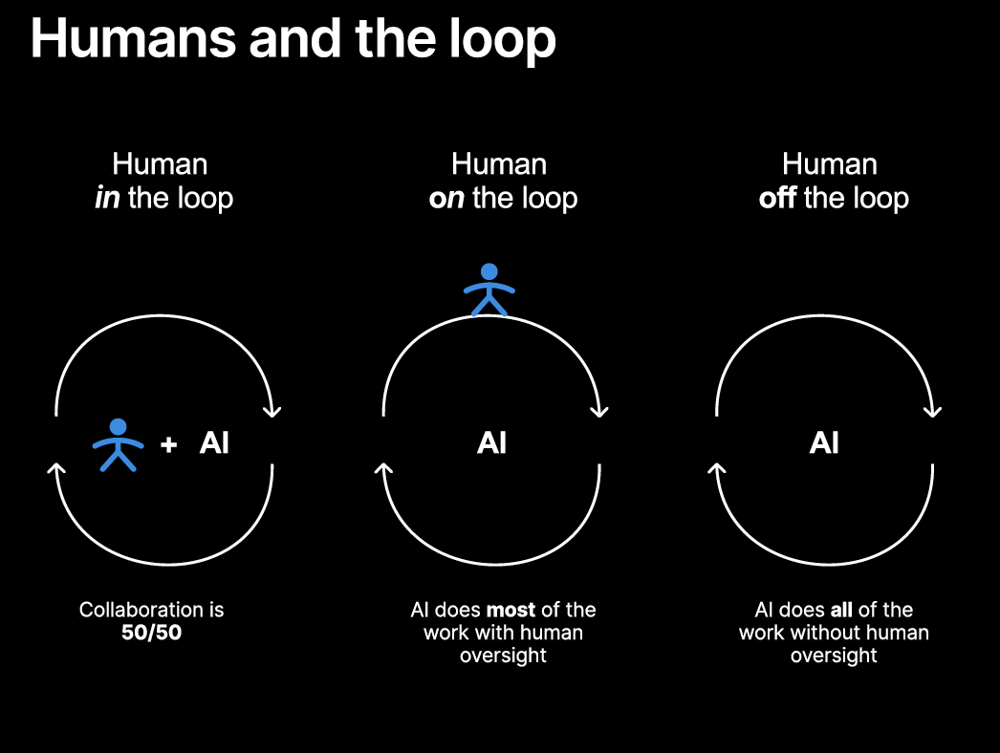
The "Humans and the loop" framework
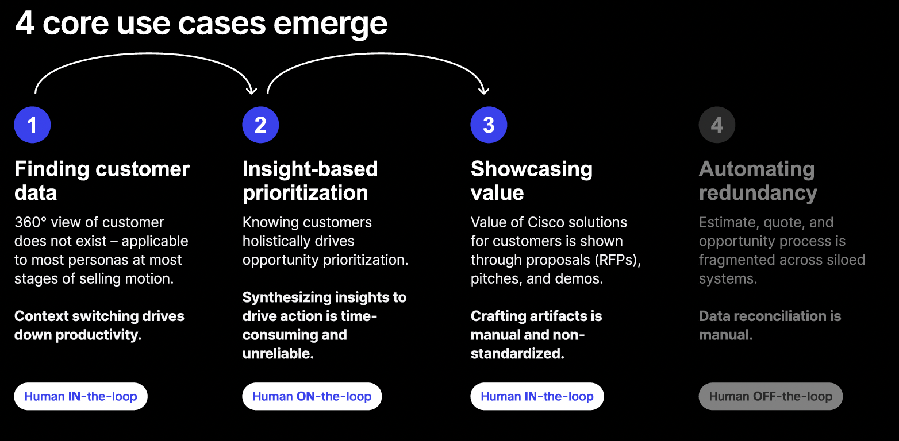
The 4 core use cases that emerged
Additionally, we conducted competitor analysis and the "Art of the Possible" stakeholder workshop to proactively identify business and engineering risks. This collaborative effort yielded 100+ AI use cases, which were subsequently categorized into 7 strategic themes. These insights laid a strong foundation and provided critical inspiration for our mid-to-long-term product proposals.
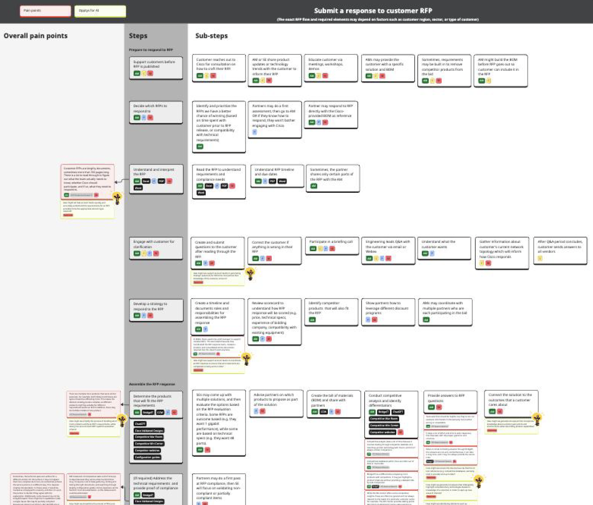
Customer RFP response process flow
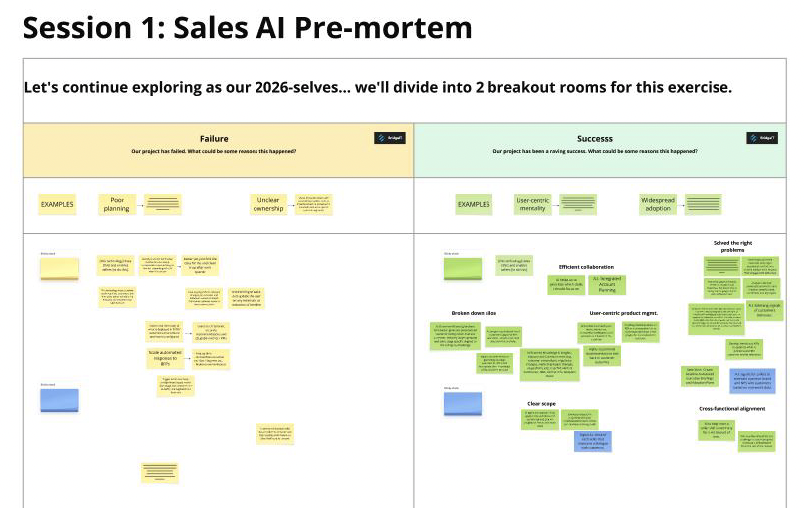
Art of Possible stakeholder workshop
Solution — Short-term
Cisco's design system (Magnetic DS) happened to be exploring LLM components at the same time, so I partnered with that team to propose the foundational chat interface design.
Given a short timeline (4-sprint MVP), I adopted RITE (Rapid Iterative Testing & Evaluation), running 30-minute sessions twice a week for iterative usability testing. 8 MVP features were tested: Salesforce CRM entry points, window view selection, prompt suggestions, chat history, response sources, response actions, document generation/download, and in-chat prompt/NBA buttons.
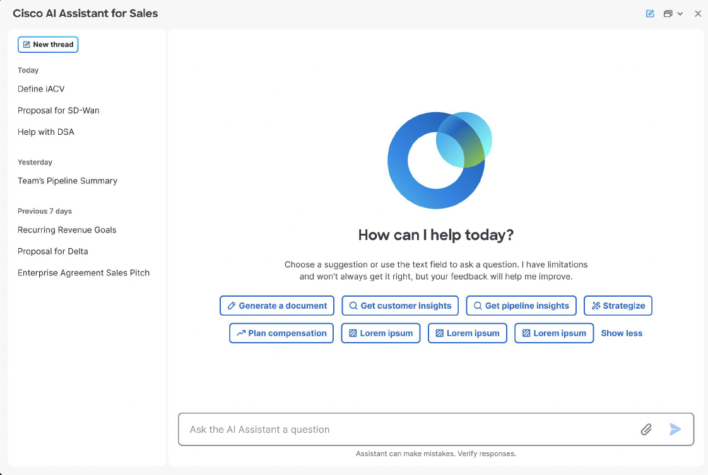
Chat interface entry point
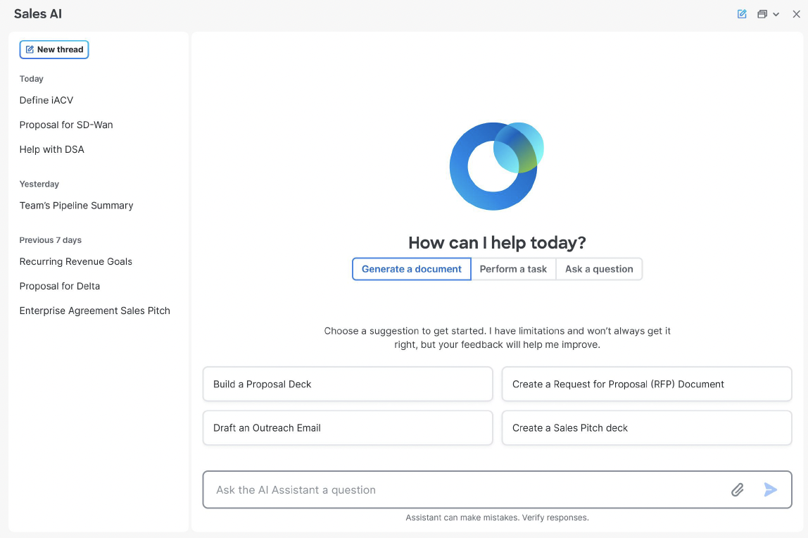
Improved Chat interface entry point
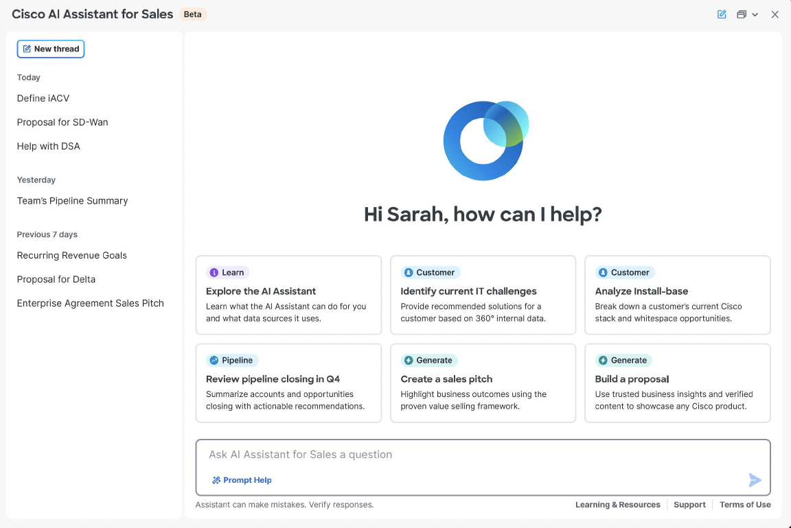
Final Chat interface entry point
Solution — Mid & Long-term
Beyond the short-term MVP, I built interactive prototypes focused on the features proposed for the next phase. 7 additional post-MVP features were tested separately: RFP generation/canvas editing, briefing dashboard, "project" information architecture, file uploads, settings/customization, rich content in responses, and voice chat.
"The future of AI is not (only) chat." As designers, our mission is to learn, normalize, and leverage universal patterns while shaping the future of new technology. Chat is reactive, which makes it too rigid for many human-on-the-loop use cases — it needed more proactivity and flexibility.
HMW: How might we re-envision AI collaboration as a structured, persistent workspace that supports a complex, multi-step selling motion?
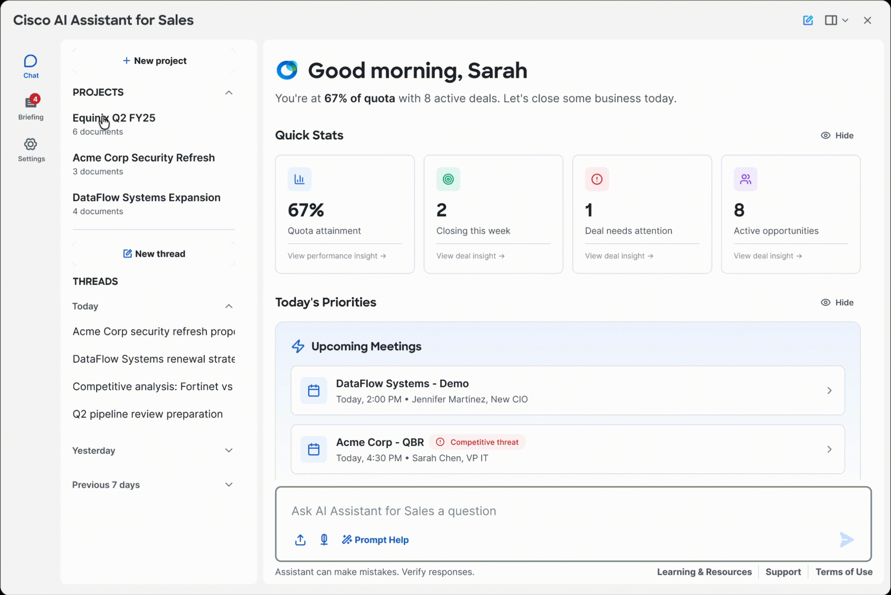
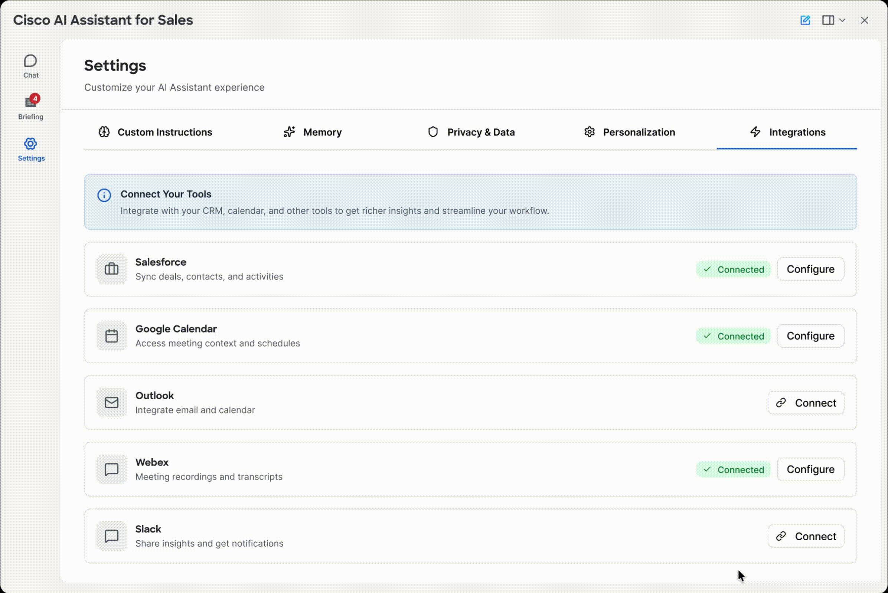
Final Thoughts
Because this project started from a place of real ambiguity, cross-functional collaboration — with fellow designers, researchers, PM, business, and engineering teams — was essential to defining a clear goal and proposing a concrete solution. A re-org meant the mid/long-term vision was never fully realized, but the journey to get there was genuinely valuable.
What I valued most was partnering closely with researchers to surface real user pain points, and running workshops with every stakeholder to build an innovative proposal everyone could align around. I later shared this experience and ideation process with other design teams, influencing other project teams as well.
I also experimented with using AI in the prototyping process. It wasn't yet able to execute fine-grained details exactly as directed, but it still saved a meaningful amount of time.